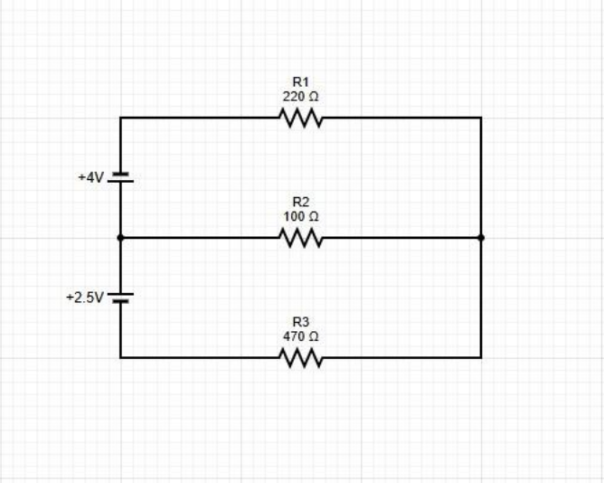

PHYS 210 · EXPERIMENT 8
Kirchhoff’s Laws
Start with the simple Excel data sheet. Fill the yellow cells with your readings and uncertainties.
Editable prep guide · Report draft PDF
Prepared November 6, 2026. Measurements and results remain blank. Yellow placeholders in the report show what to complete after lab. These downloads do not submit anything to D2L.
Bring this guide to record the measurements, then use the calculation sheets and editable report draft. All measurement cells are intentionally blank. Numerical examples are predictions only.
Confirm which procedure applies
The 2024 manual has two circuits and nominal supplies of 4.00 V and 2.50 V. Circuit 1 actually contains FOUR resistors, including two 100 Ω resistors, despite the short apparatus list. Circuit 2 contains three resistors.
The separate simplified handout refers to an older “Lab 6,” uses three resistors labelled R1 = 470 Ω, R2 = 100 Ω, R3 = 220 Ω, and asks for approximately 2.0 V and 2.5 V. It also says to treat theoretical currents as exact for comparison. It does not supply a circuit drawing, so its topology cannot be safely inferred from those labels alone.
Use the two manual circuits below unless your instructor specifies the simplified version. If using that handout, record the actual circuit sketch and source polarities first, then write its equations from that sketch. Do not apply the manual matrices to a differently wired circuit.
Bench sequence
1. Record the date, partner, meter model, ranges and uncertainty method. With power off, isolate each resistor and measure its resistance and uncertainty.
2. Build the assigned circuit with power off. Check both supply polarities against the diagram; the sources do not share a common negative terminal in these drawings. Have the wiring checked before turning on the outputs.
3. Set the assigned supply voltages. Measure the actual E1 and E2 across each supply, red on its positive terminal, black on its negative terminal. Record uncertainties.
4. Measure each resistor voltage in DC voltage mode using COM and VΩ. Follow the red/black lead positions on the next pages and keep any minus sign. Measure voltage in parallel.
5. Record fluctuations and observations, then turn outputs off before rewiring. Repeat for circuit 2 if assigned.
6. Before leaving, check that every reading has units and uncertainty, and photograph the final wiring and raw data.
What to bring and record
Two DC supplies; Fluke DMM; mounting board; leads and clips; 220 Ω and 470 Ω resistors; two 100 Ω resistors for circuit 1. Record the actual apparatus used. Estimate uncertainty from the assigned meter specification or instructor method; do not reuse the last lab’s range-dependent formula automatically.
If direct current measurements are requested, switch power off before inserting the ammeter in series using the correct current input/range. Never connect an ammeter directly across a supply. The voltage measurements are still needed for Ohm’s law and KVL.
Circuit 1 measurements
Record these details in the downloadable bench sheet.

Figure 1. Original manual circuit 1, PDF page 106. The longer battery line is positive.
a = upper centre junction; b = lower centre junction. Assume all three branch currents leave a and arrive at b: JL through R1, E1 and R3; JM downward through R2; JR through R4 and E2. A negative answer means the actual current flows the other way.
Signed resistor voltages: U1 red RIGHT / black LEFT on R1; U3 red LEFT / black RIGHT on R3; U2 red TOP / black BOTTOM on R2; U4 red LEFT / black RIGHT on R4. E1 positive terminal is at the top; E2 positive terminal is at the bottom.
| Resistor | Nominal Ω | Measured Ω | ± ΔR Ω |
|---|---|---|---|
| R1 | 220 | — | — |
| R2 | 100 | — | — |
| R3 | 100 | — | — |
| R4 | 470 | — | — |
| Quantity | Signed voltage V | ± ΔV V |
|---|---|---|
| E1 | — | — |
| E2 | — | — |
| U1 | — | — |
| U2 | — | — |
| U3 | — | — |
| U4 | — | — |
Record these details in the downloadable bench sheet.
Circuit 2 measurements
Record these details in the downloadable bench sheet.

Figure 2. Original manual circuit 2, PDF page 107. The longer battery line is positive.
a = left middle junction; b = right junction. Assume J1, J2 and J3 travel from a to b through the top, middle and bottom branches. U1, U2 and U3: red LEFT / black RIGHT on each resistor. E1 positive terminal is at a (below the top source); E2 positive terminal is also at a (above the lower source).
| Resistor | Nominal Ω | Measured Ω | ± ΔR Ω |
|---|---|---|---|
| R1 | 220 | — | — |
| R2 | 100 | — | — |
| R3 | 470 | — | — |
| Quantity | Signed voltage V | ± ΔV V |
|---|---|---|
| E1 | — | — |
| E2 | — | — |
| U1 | — | — |
| U2 | — | — |
| U3 | — | — |
Record these details in the downloadable bench sheet.
Theoretical currents with Cramer rule
Use measured resistances in Ω and measured source voltages in V. The solution is in A; multiply by 1000 for mA. These signs apply only to the diagrams and branch arrows defined above.
Circuit 1
JL + JM + JR = 0
(R1 + R3)JL − R2 JM = −E1
R2 JM − R4 JR = −E2
Solve for three branch currents. The current through R3 equals JL because R1 and R3 are in the same branch. Node b gives the negative of the node-a equation, so it adds no independent equation.
Circuit 2
J1 + J2 + J3 = 0
R1 J1 − R2 J2 = −E1
R2 J2 − R3 J3 = +E2
The lower source has the opposite orientation relative to the chosen branch path in circuit 2, which changes the sign on the last right-hand side.
Set up the determinants
Write A J = b. Use one of the coefficient tables below; the rightmost column is b. Do not put nominal resistor values into the final analysis.
| Circuit | Row | Column 1 | Column 2 | Column 3 | b |
|---|---|---|---|---|---|
| 1 | 1 | 1 | 1 | 1 | 0 |
| 1 | 2 | R1 + R3 | −R2 | 0 | −E1 |
| 1 | 3 | 0 | R2 | −R4 | −E2 |
| 2 | 1 | 1 | 1 | 1 | 0 |
| 2 | 2 | R1 | −R2 | 0 | −E1 |
| 2 | 3 | 0 | R2 | −R3 | +E2 |
For rows [a b c], [d e f], [g h i]: det(A) = a(ei − fh) − b(di − fg) + c(dh − eg).
D = det(A). Replace column 1 with b to obtain D1; replace column 2 for D2; replace column 3 for D3. Then J1 = D1/D, J2 = D2/D and J3 = D3/D. For circuit 1 these mean JL, JM and JR. Show at least one fully substituted determinant in your report.
Worked predictions and uncertainty
Practice predictions only
Circuit 1, nominal values only: D = 229400; D1 = -2530; D2 = 1080; D3 = 1450.
Currents = -11.02877 mA, +4.70793 mA, +6.32084 mA.
Negative currents run opposite the assigned arrows. Replace these predictions with the results from your measured E and R values.
Circuit 2, nominal values only: D = 172400; D1 = -2030; D2 = 2430; D3 = -400.
Currents = -11.77494 mA, +14.09513 mA, -2.32019 mA.
Negative currents run opposite the assigned arrows. Replace these predictions with the results from your measured E and R values.
Circuit 1 determinant example (nominal values):
D = (−100)(−470) − (320)(−470) + (320)(100) = 229400
D1 = −[(−4)(−470)] + [(−4)(100) − (−100)(−2.5)] = −2530
JL = D1/D = −2530/229400 A = −11.02877 mA
Experimental current and uncertainty
Iexp = U/R; ΔI = ΔU/R + |U|ΔR/R²
U is the signed resistor voltage, R the positive measured resistance, and ΔU and ΔR are nonnegative absolute uncertainties. This is the course’s sum-of-relative-uncertainties rule written so it also works when U is zero. Compute each resistor current separately, including both R1 and R3 in circuit 1.
Illustration only: U = (1.200 ± 0.010) V and R = (100.0 ± 0.5) Ω.
I = 1.200/100.0 = 0.01200 A = 12.00 mA
ΔI = 0.010/100.0 + 1.200(0.5)/(100.0)² = 0.00016 A = 0.16 mA
At one significant figure in the uncertainty, report I = (12.0 ± 0.2) mA. Keep guard digits for consistency checks and round only the final displayed result.
Compare measured and theoretical currents
Difference = |Iexp − Ith|; compare with ΔIexp + ΔIth.
For the simplified handout, set ΔIth = 0 as instructed. Then its consistency test is |Iexp − Ith| < ΔIexp. Equality is a boundary case under this strict rule. The full Experiment 8 text does not explicitly state whether theoretical uncertainty is required; record the instructor’s convention. Do not silently describe an assumed exact theory value as an uncertainty-propagated prediction.
For circuit 1, compare U1/R1 and U3/R3 separately with JL; compare U2/R2 with JM and U4/R4 with JR. For circuit 2, compare Uk/Rk with Jk for k = 1, 2, 3.
Verify the laws and finish the report
Kirchhoff current law
Use currents calculated from measured voltages, not theoretical currents. Otherwise the check merely repeats the equations used to solve the circuit.
Circuit 1 at a: S = U1/R1 + U2/R2 + U4/R4
Circuit 1 at b: S = −(U3/R3 + U2/R2 + U4/R4)
Circuit 2 at a: S = U1/R1 + U2/R2 + U3/R3; at b use −S.
Add the absolute current uncertainties of the terms to obtain ΔS. Compare |S| with ΔS. Also compare U1/R1 and U3/R3 in circuit 1; they should agree within their combined uncertainty. The simplified handout asks for one junction; the full manual asks for each junction.
Kirchhoff voltage law
Each loop below travels from a to b along the first named branch and returns along the second. U is a measured resistor drop in the defined branch direction. S is the signed voltage sum, expressed as drops; reversing the loop changes its overall sign but not its zero test.
| Circuit | Loop path | Signed sum S |
|---|---|---|
| 1 | Left then middle | U1 + E1 + U3 − U2 |
| 1 | Middle then right | U2 − U4 + E2 |
| 1 | Left then right | U1 + E1 + U3 − U4 + E2 |
| 2 | Top then middle | E1 + U1 − U2 |
| 2 | Middle then bottom | U2 − E2 − U3 |
| 2 | Top then bottom | E1 + U1 − E2 − U3 |
For every row, ΔS is the sum of the absolute voltage uncertainties of all terms in that row. Check whether zero lies in S ± ΔS. State any exact boundary case. The third loop is algebraically dependent, but record all three checks as requested.
Completion checklist
[ ] Confirm the procedure, circuit sketch, polarities and actual supply settings.
[ ] Fill every raw measurement and uncertainty; keep the original signed readings.
[ ] Include one substituted determinant and one current uncertainty calculation.
[ ] Report every resistor-current comparison, all three loops per assigned circuit, and the required junction checks.
[ ] Discuss the actual residuals. Possible causes include contact resistance, supply drift, resistor heating and meter loading; tie each explanation to evidence and a practical improvement.
[ ] Replace yellow placeholders, confirm past-tense procedure, add measured results to the conclusion, and attach raw data. No graph is required by these instructions.
Sources
Camosun College, PHYS 210 Lab Manual Complete 2024, Experiment 8, L8-1 to L8-5 (PDF pp. 105–109); report format and uncertainty rules in the introduction. Separate course handout: PHYS 210/295 Kirchhoff’s Rules Lab — Simplified Procedure (1 page).